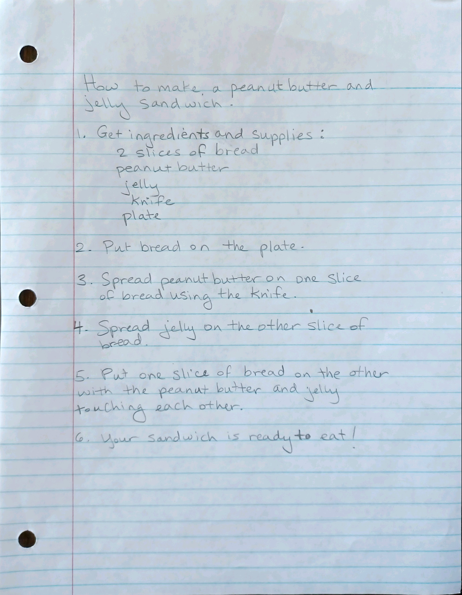
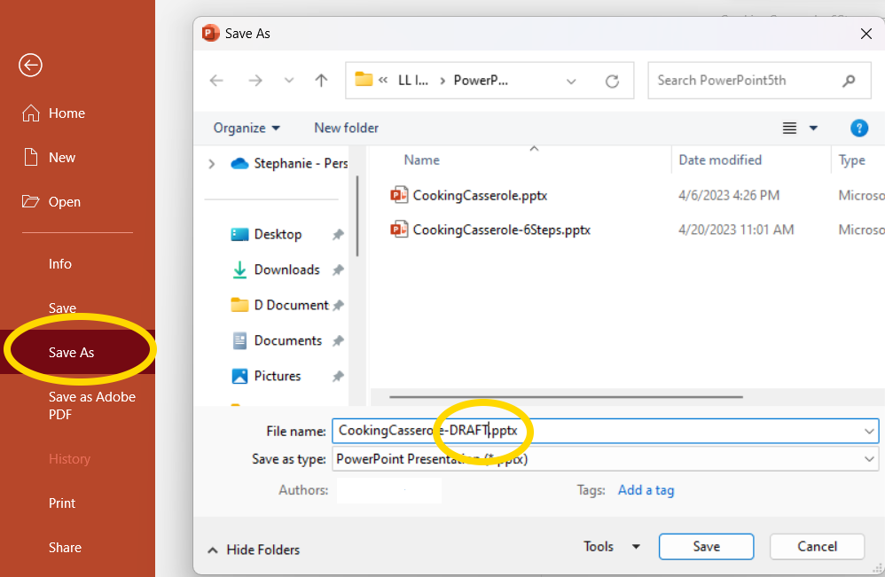

Do It! PowerPoint: How to Step-by-Step
 The Challenge
The Challenge
Your challenge is to choose a task that can be done in three to six steps. Perhaps you can teach your classmates how to pitch a tent, make a peanut butter and jelly sandwich, or how to sort shapes according to their properties. You will create a PowerPoint with slides that will explain what you are teaching, show the steps, and summarize the key points at the end. You should also include graphics to help illustrate the steps. At the end of this project, you can use this PowerPoint along with any props you may need to teach your skill to your classmates.
Project Steps
-
Decide What to Teach
-
Outline the Steps
-
Create a PowerPoint Presentation
-
Share Your Draft
-
Make Improvements
-
Practice Presenting
Decide What to Teach
You can teach your classmates any task or skill that can be done in three to six steps. Just make sure to get approval from your facilitator once you choose your topic. It may help to choose a task that you enjoy since it is easier to be interesting and engaging when you are enthusiastic about the topic. If possible, you may want to choose a task that not everyone knows how to do, such as playing an instrument or building a birdhouse. Also, choosing a simple task is important because complicated ones are difficult to explain in three to six basic steps.
Outline the Steps
Once your facilitator approves of your topic, write down the steps as clearly and simply as you can. If you find that it is hard to write out the steps simply, or to limit the instructions to six steps, you may need to choose a new skill to teach. Or you may need to simplify the task. For example, rather than teaching your classmates how to play the melody of Mary Had a Little Lamb on the guitar, you can show them how to strum a chord or two while you sing the melody. Review the steps with classmates to make sure that they make sense.

Create a PowerPoint Presentation
Create slides with the steps for your task. You can organize it however you think would be best for your audience. Here is one suggestion:
- Slide 1: Share what you will teach
- Slide 2: Summary of the steps
- Slide 3: List of supplies (if needed)
- Slides 4-9: One slide per step
- Slide 10: Share key points or tips
- Slide 11: Conclusion (scongratulate the audience for learning a new skill, show a finished product, and/or thank your audience)

Share Your Draft
Once you create your PowerPoint presentation, review it with classmates. Now that they can see the steps and images together, they may have more feedback for how you can improve your presentation. You may even wish to practice presenting your topic so they can also give you feedback on your public speaking and teaching methods.
Be sure to save a copy of your draft before making your final changes. (Go to File > Save As). You will need to submit both your draft and final copy in the project submission section.
 Save As" title="save a draft of your PowerPoint under File > Save As" data-d2l-editor-default-img-style="true" style="max-width: 100%;">
Make Improvements
Consider the feedback you receive from your classmates as you make improvements to your presentation. Just because you get advice does not mean you need to take it. However, if the feedback helps you simplify and clarify, then it is probably good advice.
Practice Presenting
Be sure to practice your presentation out loud. The more you practice, the more comfortable you will be with presenting. And usually, when the presenter is more comfortable, he or she is also more engaging.
You may want to record yourself practicing so that you can analyze your oral presentation and make improvements.